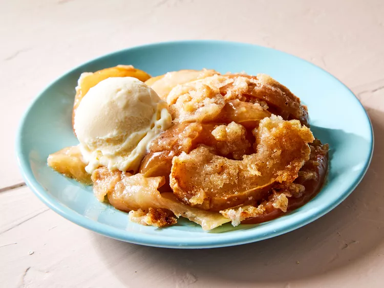

Apple Betty

Description
This apple betty requires no pie crust. Everyone always raves about this dessert with a delicious crisp topping. You can
control the sweetness by adjusting the amount of streusel.
Ingredients
- 4 cups thinly sliced apples
- ¼ cup orange juice
- 1 cup white sugar
- ¾ cup all-purpose flour
- ½ teaspoon ground cinnamon
- ¼ teaspoon ground nutmeg
- 1 pinch salt
- ½ cup cold butter, cubed
Directions
- Gather the ingredients. Preheat the oven to 375 degrees F (190 degrees C). Lightly grease a 9-inch pie plate.
- Mound apples in the prepared pie plate. Sprinkle with orange juice.
- Mix together sugar, flour, cinnamon, nutmeg, and salt in a large bowl.
- Cut in butter with 2 knives or a pastry blender until mixture resembles coarse crumbs.
- Scatter streusel over apples.
- Bake in the preheated oven until streusel is browned and filling is hot, about 45 minutes. It will thicken as it cools;
serve warm.